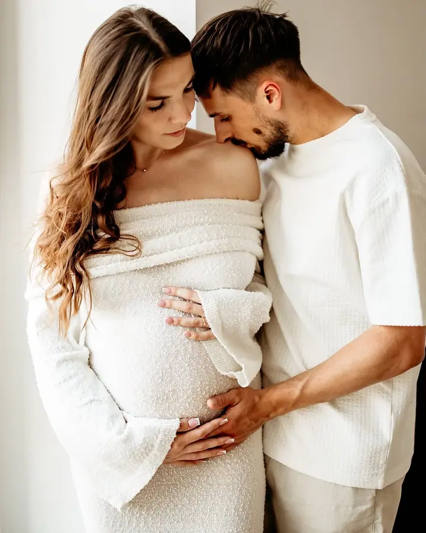
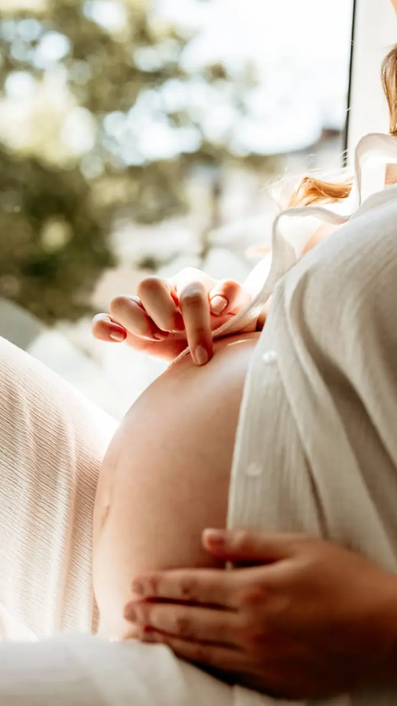
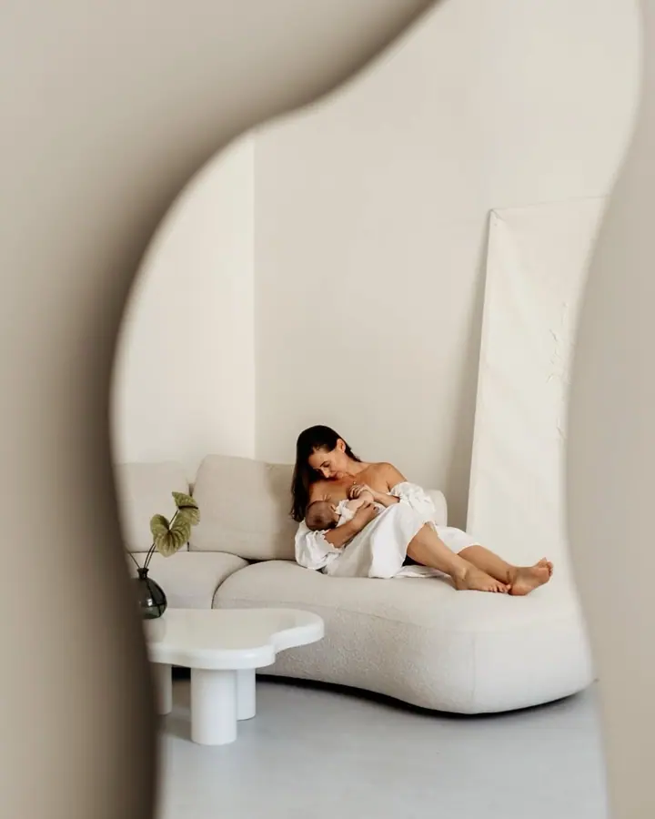

Těhotenské focení
Bříškové focení u vás doma, v ateliéru nebo venku. Klidně i s partnerem a staršími dětmi. Je mi z celé práce nejbližší a k dispozici máte zdarma můj mobilní šatník.

Jmenuji se Gosia Radoń a v Krakově fotím těhotenství, novorozence a celé rodiny v přirozeném lifestylovém stylu. Nejbližší jsou mi bříšková a novorozenecká focení. Fotím…
Rezervovat termínFotografii mám ráda odjakživa a od roku 2022 se jí věnuji naplno ve vlastní firmě. Vytvářím přirozené, teplé záběry plné něžných gest a opravdových emocí. Nejraději fotím budoucí maminky a úplně malá miminka, ale ráda zachycuji i celé rodiny, ženy a firemní portréty.


Jestli je to vaše první focení a v hlavě vám běží „neumím pózovat“, „budu ztuhlá“ nebo „můj partner se nerad fotí“, nebojte se. Tyhle věty slýchám na začátku nejčastěji. Rychle si k vám najdu cestu, uvolním atmosféru a celým focením vás provedu, takže to bude lehké a bez stresu.
Nechodí ke mně modelky a modelové, ale normální lidé, často poprvé před objektivem. Stačí se podívat do portfolia a uvidíte, že se dá vypadat krásně a přirozeně. Vy to zvládnete také.
Co fotím
Bříškové focení u vás doma, v ateliéru nebo venku. Klidně i s partnerem a staršími dětmi. Je mi z celé práce nejbližší a k dispozici máte zdarma můj mobilní šatník.
Přirozené lifestylové focení miminka doma nebo v minimalistickém ateliéru. Nabízím i focení prvních chvil přímo v porodnici.
Uvolněné focení celé rodiny doma, v ateliéru nebo v parku. Žádné strnulé pózy, hlavně objetí, hra a opravdové emoce.
Minimalistické ženské focení ve světlém ateliéru a lifestylové fotky pro vaši značku, web nebo sociální sítě.
Postup
Ozvěte se přes formulář, e-mailem nebo telefonem. Domluvíme se, jaké focení si přejete a jestli bude u vás doma, v ateliéru, venku nebo v porodnici.
Pošlu vám tipy, jak se na focení připravit a co si vzít na sebe. Na těhotenské focení si můžete zdarma vybrat šaty z mého mobilního šatníku.
Celou dobu vás vedu a radím, co dělat. Nemusíte umět pózovat, stačí být spolu a zbytek nechat na mně.
Hotové fotky dostanete v online galerii. Pokud budete chtít, můžeme z nich připravit i fotoalbum.
Otázky
Tohle slýchám nejčastěji. Celým focením vás provedu, poradím, kam se postavit a co dělat, a hlavně se snažím, aby byla atmosféra uvolněná.
K přípravě vám pošlu tipy. Na těhotenské focení můžete zdarma využít můj mobilní šatník se šaty, svetry a látkami v béžové, bílé a karamelové barvě.
Fotím u vás doma, ve světlém ateliéru i venku v přírodě. Novorozence můžu nafotit i v prvních chvílích přímo v porodnici.
Ano, nabízím dárkové poukazy na focení. Hodí se k narozeninám, ke křtu, ke svatbě, na rozlučku se svobodou nebo na baby shower.